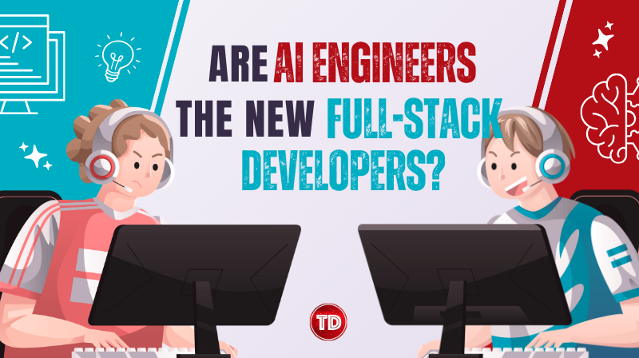
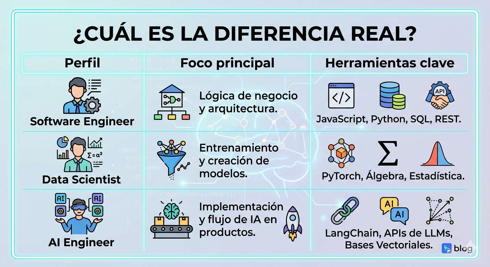

¿Es el "AI Engineer" el nuevo Fullstack? Cómo empezar hoy mismo.

Si sientes que el mundo de la programación se ha vuelto un poco "loco" últimamente, no estás solo. Hace apenas unos años, el camino al éxito estaba claro: aprendías un stack (como MERN), dominabas las bases de datos y desplegabas en la nube. Eras un Fullstack Developer y el mercado te amaba.
Pero las reglas del juego han cambiado. Según el reporte de Stack Overflow (2025), más del 70% de los desarrolladores ya han integrado herramientas de IA en su flujo de trabajo, marcando el inicio de una nueva era: el ascenso del AI Engineer.
El cambio de paradigma: De "escribir" a "orquestar"
Hasta ahora, nuestra labor era puramente imperativa: le dábamos instrucciones exactas a la computadora. El AI Engineer, en cambio, actúa como un arquitecto que utiliza modelos de lenguaje (LLMs) como piezas de un sistema complejo. Como señala Andriushchenko (2024), el valor del ingeniero moderno no está en "picar código" más rápido que un asistente, sino en saber conectar la inteligencia artificial con datos reales.

El "Starter Kit" del AI Engineer
Si quieres subirte a esta ola, estas son las tres áreas técnicas en las que deberías enfocarte:
1. El concepto de RAG (Retrieval-Augmented Generation)
Este es el término más importante del año. La IA por sí sola suele "alucinar" o desconocer datos privados. La técnica RAG, introducida originalmente por Lewis et al. (2020), permite que el modelo consulte una fuente de datos externa antes de generar una respuesta. Esto garantiza que la IA responda con información precisa, actualizada y propia de tu aplicación.
2. Bases de Datos Vectoriales y Orquestadores
Para que una IA "entienda" el contexto, necesitamos guardar la información en forma de vectores. Herramientas como Pinecone o Supabase son esenciales. Además, para gestionar estas interacciones, dependemos de "orquestadores". Como menciona Chase (2025), herramientas como LangChain son el "pegamento" necesario para pasar de un simple chat a un agente autónomo capaz de ejecutar tareas.
¿Sigue siendo necesario saber programar?
Rotundamente, sí. Un error común es pensar que la IA reemplazará al programador. La realidad es que la IA genera el "motor", pero tú sigues necesitando construir el coche. El AI Engineer es, en esencia, un ingeniero de software que ha aprendido a tratar a los modelos de IA como una API más, pero con capacidades cognitivas (Swyx, 2023).
Conclusión: El futuro es de los "Programadores Aumentados"
No te dejes intimidar. La barrera de entrada nunca ha sido tan baja. Si
ya sabes JavaScript o Python, estás a un tutorial de distancia de
construir algo asombroso. El mercado busca profesionales que vean en la
IA una herramienta para construir lo que antes era imposible.
Referencias Bibliográficas
• Andriushchenko, A. (2024). The rise of the AI Engineer. Medium.
• Chase, H. (2025). Orchestrating LLMs. LangChain Blog.
• Lewis, P., et al. (2020). Retrieval-Augmented Generation.
NeurIPS.
• Stack Overflow. (2025). Developer Survey 2025.
• Swyx. (2023). The Rise of the AI Engineer. Latent Space.